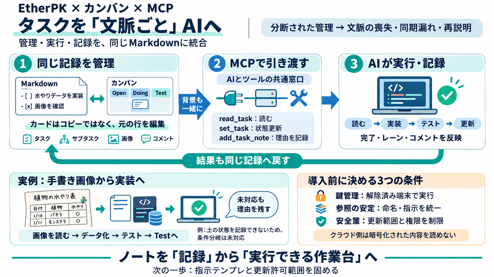

MCPとは？Model Context Protocolの仕組み・APIとの違い・MCPサーバーの作り方【2026年10月】
MCPホスト：利用者が触るAIアプリ本体。Claude Desktop、Claude Code、ChatGPT、Cursor、VS Codeなど。LLMとの対話全体と、どのサーバーにつなぐかを管理する。 MCPクライアント：ホストの中にあ…

タスクは、実行できる文脈
Markdownのチェックボックスをカンバンで管理し、MCP経由でAIコーディングエージェントへ“文脈ごと”引き渡して結果を自動反映する流れを解説します。
文脈、消えがち
タスク管理UIとAI実行環境が別だと、状態の同期漏れ・背景の喪失・再説明コストが発生します。
カードは“別物”じゃない
カンバンのカードはタスクの“別コピー”ではなく、元のMarkdown行を編集するビューです。
引き渡しの単位
エージェントへ渡すのは「指示文」だけではなく、タスク＋サブタスク＋アセット（画像等）＋コメントを含む一式です。
作業フロー、直列化
エージェントは読み取り後に、サブタスク完了（- [x]）やレーン更新（状態移動）を書き込みます。
実例：画像からデータ化
デモでは、画像に含まれる水やり間隔を読み取ってデータ化し、ソース編集→テスト実行→合格したら記録を更新します。
できないことは残す
画像内の「土が湿っているなら1週間スキップ」のような条件は、アプリが土状態を記録しないため未対応になり、その理由がコメントとして残ります。
鍵管理が前提
同期グラフは鍵で暗号化され、クラウド側は内容を読めません。エージェントは暗号鍵を解除した端末上でHeadless Clientとして動作します。
MCP＝共通インターフェース
MCPはAIアプリが外部ツールやデータへ接続するための共通プロトコルです。EtherPKはMCPサーバ（Headless Client）を提供し、タスクをread/writeできる形にします。
二重管理が減る理由
カード移動が元Markdown行を書き換えるため、進捗の信頼性が上がり、状態の二重管理が起きにくくなります。
参照はテキストに依存
タスクの参照は「言葉（参照テキスト）」に依存するため、表現を変えるとエージェントが動作を変えたり、新しい指示を求められる可能性があります。
強み×不確実性
この仕組みは、管理UI・編集UI・実行者を統合し手戻りを減らしますが、鍵管理・参照安定性・失敗時の安全策が運用課題になります。
“作業台”としてのノート
参照・用語の位置づけ
本文で使った考え方（MCPの位置づけ、ツール公開、プロトコルとしての統一）に基づく一般的整理です。
MCPホスト：利用者が触るAIアプリ本体。Claude Desktop、Claude Code、ChatGPT、Cursor、VS Codeなど。LLMとの対話全体と、どのサーバーにつなぐかを管理する。 MCPクライアント：ホストの中にあ…
The Model Context Protocol (MCP) is an open standard that lets AI models connect to external tools, data sources, and sy…
MCP (Model Context Protocol) is an open-source standard for connecting AI applications to external systems. Using MCP, A…
·Mar 20, 2026·14 min read # What is MCP (Model Context Protocol)? Understanding Anthropic's protocol for connecting AI…
MCP lets AI tools like Claude and Cursor query your business data directly. Here is what Model Context Protocol means, w…